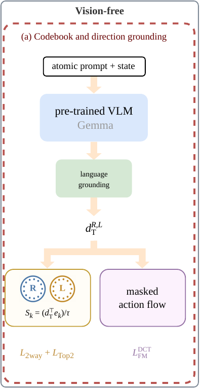
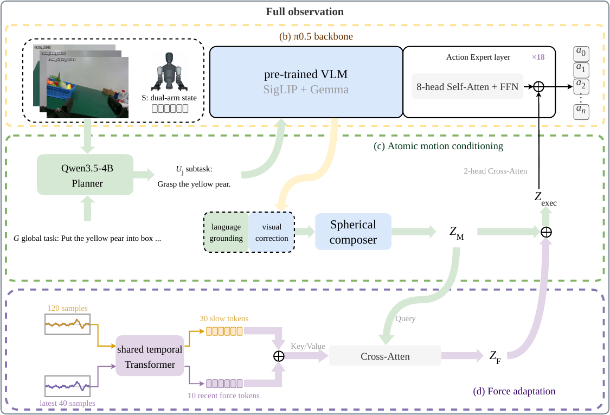

Multi-Fruit Sorting
Object- and destination-specific subtask instructions in familiar layouts.
† Co-corresponding authors
Language-guided fruit manipulation and contact-rich dual-arm tasks.
Each video compares methods on one task; footage is shown at 5× speed.
Object- and destination-specific subtask instructions in familiar layouts.
Subtask steering with unseen fruit and target-box placements.
Opening, reorientation, alignment and contact-rich insertion.
Coordinated stabilization, rotation and sustained wiping contact.
Can changing only the language instruction redirect a vision-language-action (VLA) policy’s end effectors, or does the visually driven motion prior dominate? We present AMC (Atomic Motion Coordinate), a geometry-grounded coordinate for steerable and force-responsive manipulation. Each arm owns thirteen translation, rotation, and hold atoms grounded through text and forward kinematics with vision withheld. Under full observation, the resulting coordinate is injected into every action-expert block through a cross-attention residual. Contact history modulates the same coordinate through a bounded spherical residual, recomputed from a fixed nominal latent to regenerate only the unexecuted horizon suffix.
Across 7,520 matched offline interventions per policy, AMC achieves 92.5%/83.1% opposite-atom separation for single/dual interventions, compared with 39.1%/24.0% for LA4VLA-style. Across 50 real-robot trials per reported method–task pair, AMC improves out-of-distribution fruit progress over fine-tuned π0.5 from 60.5% to 87.8%. Adding force adaptation improves Plug/Vase progress over force-free AMC from 59.0%/71.6% to 78.5%/75.2%.
The atomic coordinate specifies a motion trend; the action expert generates its scene-conditioned realization.


Forward-kinematics supervision grounds a named, per-arm motion coordinate. Under full observation, this coordinate conditions every action-expert block. During contact, a bounded force update revises it from the same nominal anchor, retaining the committed action prefix and regenerating only the unexecuted suffix.
Mean normalized task progress (%) over 50 trials per reported method–task pair.
| Method | Fruit | OOD Fruit | Plug | Vase |
|---|---|---|---|---|
| Fine-tuned π0.5 | 82.7 | 60.5 | 55.0 | 65.2 |
| RSS | 54.5 | 39.1 | — | — |
| LA4VLA-style | 60.7 | 40.4 | — | — |
| ForceVLA | — | — | 30.0 | 40.4 |
| AMC | 88.9 | 87.8 | 59.0 | 71.6 |
| AMC + Force | — | — | 78.5 | 75.2 |
Fruit tasks use human-selected subtask prompts; Plug and Vase use planner-generated prompts. Task families are evaluated separately. “—” denotes an untested pair.